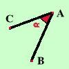

Convenzioni iniziali
-
Indicheremo i punti con le lettere maiuscole dell'alfabeto latino
A, B, C, D, ...
-
Indicheremo le rette con le lettere minuscole dell'alfabeto latino
a, b, c, d, ...

-
indicheremo gli angoli o con le lettere minuscole dell'alfabeto
greco
 , ,
 , ,
 , ,
 ,... ,...
oppure indicando i punti dei segmenti che delimitano l'angolo:
BAC indichera'
l'angolo in A
veramente si dovrebbe mettere il simbolo di angolo
^ sulla lettera centrale ma
a questo dovrai pensarci tu perche' io non riesco a farlo se non
usando i saratteri ascii, cosa piuttosto scomoda
|